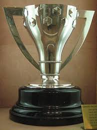
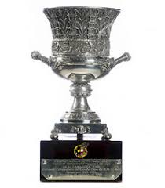
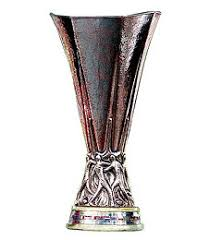

Contacto
Trofeos
Inicio
En cada imagen podremos encontrar un hiperenlace a wikiquedia donde hay cada explicacion de como gano cada trofeo
En las imagenes que se encuentra en la parte debajo de este texto podras encontrar un atajo para ir a la publicacion del tro
  